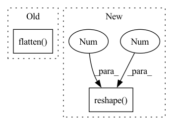

Pattern ID :26801
Before Change
masked_src = torch.masked_fill(image, mask, -1)
visual_tokens = self.d_vae(image_for_vae.unsqueeze(0)).argmax(1)
unmasked_trg = torch.masked_fill(visual_tokens, ~bool_masked_pos.bool(), self.pad_token_id)
return masked_src.flatten() , unmasked_trg.flatten()
if __name__ == "__main__":After Change
masked_src = torch.masked_fill(image, mask, -1)
visual_tokens = self.d_vae(image_for_vae.unsqueeze(0)).argmax(1)
unmasked_trg = torch.masked_fill(visual_tokens, ~bool_masked_pos.bool(), self.pad_token_id)
return masked_src.reshape(3 , 224, 224 ) , unmasked_trg.flatten()
if __name__ == "__main__":In pattern: SUPERPATTERN
Frequency: 4
Non-data size: 2
Instances Fragment ID: 80151367
Project Name: aryanshekarlaban/data2vec-pytorch
Commit Name: b7ac6aa0cfaa866c15f06c4bd30a5e88fffcb707
Time: 2022-03-20
Author: arxyzan@gmail.com
File Name: vision/dataset.py
M Class Name: BEiTPretrainingDataset
N Class Name: BEiTPretrainingDataset
M Method Name: __getitem__(2)
N Method Name: __getitem__(2)
M Parent Class: ImageFolder
N Parent Class: ImageFolder
M File Name: vision/dataset.py
N File Name: vision/dataset.py
M Start Line: 28
M End Line: 28
N Start Line: 29
N End Line: 29
Before Change
// scale (i.e., this YOLO layer) with predictions from other scales
// in Darknet.forward().
bbox_xywh = bbox_xywh.squeeze().permute(1, 0, 2, 3).reshape(4, -1).T
max_class_score = max_class_score.flatten() .unsqueeze(1)
max_class_idx = max_class_idx.flatten()
// Concatenate bbox coordinates and max class scores such that indicesAfter Change
// `class_prob`, `class_idx` -> (batch_size x num_predictions)
// tensors, where dim 1 corresponds to the probability and index,
// respectively, of the class with the greatest probability.
bbox_xywh = bbox_xywh.permute(0, 1, 3, 4, 2).reshape( batch_size, -1 , 4 )
class_prob = class_prob.reshape(batch_size, -1)
class_idx = class_idx.reshape(batch_size, -1)
return bbox_xywh, class_prob, class_idx Fragment ID: 80151399
Project Name: nrsyed/pytorch-yolov3
Commit Name: d7a60b5b723605305286d7d6f2169ee599294703
Time: 2020-04-12
Author: najam.r.syed@gmail.com
File Name: darknet.py
M Class Name: YOLOLayer
N Class Name: YOLOLayer
M Method Name: forward(2)
N Method Name: forward(2)
M Parent Class: torch.nn.Module
N Parent Class: torch.nn.Module
M File Name: darknet.py
N File Name: darknet.py
M Start Line: 78
M End Line: 125
N Start Line: 76
N End Line: 122
Before Change
for i in range(B):
valid = valids[i].bool() // [P]
pred, gt = pred_pcs[i], gt_pcs[i] // [P, N, 3]
pred = pred[valid].flatten( 0, 1) .cpu().numpy()
gt = gt[valid].flatten(0, 1).cpu().numpy() // [n*N, 3]
pred_pcs_lst.append(pred)
gt_pcs_lst.append(gt)After Change
// only append GT once
if i == 0:
gt = gt_pcs[j][valid].cpu().numpy()
gt = colorize_part_pc(gt, colors).reshape(-1 , 6 )
gt_pcs_lst.append(gt)
return gt_pcs_lst, pred_pcs_lst
Fragment ID: 80151365
Project Name: wuziyi616/multi_part_assembly
Commit Name: 0148c98759e6c3ff6b944136ebc93aeb67f0d421
Time: 2022-03-08
Author: dazitu616@gmail.com
File Name: multi_part_assembly/models/pn_transformer/network.py
M Class Name: PNTransformer
N Class Name: PNTransformer
M Method Name: sample_assembly(2)
N Method Name: sample_assembly(2)
M Parent Class: pl.LightningModule
N Parent Class: pl.LightningModule
M File Name: multi_part_assembly/models/pn_transformer/network.py
N File Name: multi_part_assembly/models/pn_transformer/network.py
M Start Line: 372
M End Line: 387
N Start Line: 404
N End Line: 430